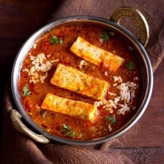
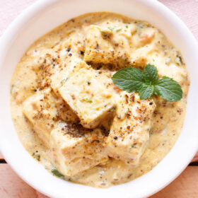

Shahi Paneer
Ingredients
Whole spices:
- 3 green cardamoms
- 1 black cardamom
- 3 cloves
- 1- inch cinnamon
- 1 teaspoon cumin
For gravy paste
- 1 onion sliced
- 7 garlic cloves
- 1 teaspoon ginger paste
- 2 green chilies halved
- 5 cashews
- 5 almonds
- 4 to matoes sliced
- Salt to taste
- 2 teaspoon Kashmiri red chili powder
- 2 teaspoon coriander powder
- ½ cup water
- ¼ cup yogurt
- For making Shahi Paneer gravy
- 2 teaspoon clarified butter
- ¼ teaspoon turmeric powder
- 1 teaspoon Kashmiri red chili powder
- 2 tablespoon cream
- 200 gram Paneer cut into cubes
- 1 teaspoon roasted Kasuri Methi
- ½ teaspoon Sugar
Method
Preparations:
- Heat 2 teaspoon of oil over medium high heat in a pan.
- Add whole spices and sauté for 30 seconds.
- Add sliced onions and cook until it is translucent.
- Next, add ginger, garlic and green chilies. Stir and cook for 2 minutes.
- Add cashew and almonds. Stir fry for 2 minutes.
- Add tomato and salt to taste. Cook for 3-4 minutes.
- Add Kashmiri red chili powder and coriander powder. Stir and cook for 2 minutes.
- Add ½ cup water. Cook until tomatoes are soft and mushy. It may take 5 minutes.
- Remove from heat. Let the mixture cool down completely.
- Remove black cardamom from it (optional). Transfer the mixture to a mixer/grinder jar.
- Add yogurt and grind it to a fine paste.
- Strain the mixture for smooth restaurant style gravy. Set it aside.
Making Shahi Paneer
- Heat 2 teaspoon of clarified butter over low-medium heat in a pan.
- Add turmeric and kashmiri red chili powder. Saute for 30 seconds.
- Add the prepared gravy paste. Stir to combine.
- Cover and cook until the gravy comes to a boil.
- Add paneer, cream and kasuri methi and sugar. Stir it gently.
- Taste the gravy and if required add salt.
- Cook for 2 minutes. Remove from heat.
- Shahi Paneer is ready to serve.
Kadai Paneer Gravy

Ingredients
Main Ingredients
- 250 to 300 grams Paneer (Indian cottage cheese)
- 1 small to medium capsicum (green bell pepper), thinly sliced
- 1.5 inches ginger and 7 to 8 medium sized garlic- crushed in a mortar-pestle to a paste
- 1 to 2 green chilies - chopped
- 2 onions (medium-sized) - 100 grams, finely chopped
- 7 tomatoes (small to medium-sized) - 500 to 550 grams (2 tomatoes, finely chopped and 5 tomatoes, pureed in a blender)
- ¾ to 1 teaspoon Garam Masala
- ½ tablespoon crushed kasuri methi (dried fenugreek leaves)
- ½ to ¾ cup water or add as required
- 2 tablespoons light cream or 1 tablespoon heavy cream - optional
- 4 tablespoons Butter or oil or ghee (clarified butter)
- 1 to 2 tablespoons chopped coriander leaves - for garnish
- salt as required
For Kadai Masala
- 5 teaspoons coriander seeds
- 4 to 5 kashmiri red chilies - seeds removed - for other variety of dry chilies, reduce to 2 to 4 depending on their heat, pungency
Method
Preparation
- First roast the coriander and dry kashmiri red chilies in a pan on a low heat till aromatic.
- When the spices cool, grind both of them in a grinder to a semi fine powder. Keep aside.
- Finely chop the onions. Julienne (cut into very thin strips) the capscium/green bell pepper.
- Finely chop 2 tomatoes. Roughly chop 5 tomatoes and add them to the blender. Make a puree of the tomatoes.
Keep the tomato puree aside. Crush the ginger-garlic to a fine paste in a mortar-pestle.
Making Kadai Paneer Gravy
- In a pan heat butter or oil or ghee. Then add the ginger-garlic paste and saute till their raw aroma disappears.
- Then add the chopped onions and saute till transparent.
- Add the ground coriander and kashmiri red chilli powder that we made. Also add green chilies. mix well.
- Then add the finely chopped tomatoes and sauté till the tomatoes become pulpy and you see oil releasing from
the sides of the tomato masala. Then add tomato puree.
- Stir well and continue to saute till you see oil leaving the sides. About 9 to 10 mins on a low flame.
- Add the capsicum/green bell pepper julienne. Stir and simmer for 2 to 3 minutes on a low to medium flame.
- Add water and salt and continue to simmer for some 7 to 8 minutes.
- Later add crushed kasuri methi (dry fenugreek leaves) and garam masala powder and stir.
- Add paneer cubes or slices. Stir gently. Cook the paneer for about 1 to 2 minutes.
- You can also 2 tbsp of cream toward the end. Just stir the cream gently in the gravy.
- Garnish with chopped coriander leaves and Serve Kadai Paneer Gravy with rotis, naan, steamed rice or jeera rice.
Chilli Paneer
Ingredients
For Batter
- 2 tablespoons cornstarch (also known as cornflour in India)
- 3 tablespoons all-purpose flour
- ½ teaspoon ginger paste
- ½ teaspoon garlic paste
- ¼ teaspoon crushed black pepper or black pepper powder
- ¼ teaspoon kashmiri red chilli powder or sweet paprika
- salt as required
- ¼ cup water or add as required
For Frying Paneer
- 3 tablespoons oil
- 200 to 250 grams Paneer - cut in cubes
For Chilli Paneer Gravy Or Sauce
- ⅓ cup spring onions - chopped or 2 small sized spring onions (scallions)
- 2 to 3 green chillies - slit or sliced
- 2 teaspoons ginger - finely chopped
- 2 teaspoons garlic - finely chopped
- ½ cup capsicum - sliced or 1 small green bell pepper
- 2 teaspoons soy sauce - naturally brewed
- 1 teaspoon red chilli sauce - spicy tasting
- ¼ teaspoon black pepper powder
- ½ teaspoon kashmiri red chilli powder or sweet paprika
- ½ to 1 teaspoon sugar or add as required
- salt as required
- ½ to ⅔ cup water or add as required
- 1 tablespoon cornstarch (also known as cornflour in india)
- 2 to 3 tablespoons water for dissolving cornstarch
- ¼ to ½ teaspoon rice vinegar or white vinegar - optional
- 2 to 3 tablespoons spring onion greens - chopped, to be added later
Method
Making Batter
- In a bowl take 2 tablespoons cornstarch and 3 tablespoons all-purpose flour.
- Next add 2 teaspoons finely chopped ginger, 2 teaspoons finely chopped garlic,
¼ teaspoon crushed black pepper or black pepper powder and ¼ teaspoon kashmiri red chilli powder. Also season with salt as required.
- Add ¼ cup water or add as required.
- With a wired whisk or a spoon mix very well to get a smooth batter without any lumps.
- Now add paneer cubes in the batter.
- With a spoon gently coat the paneer cubes with the batter.
Frying Paneer
- Heat 3 tablespoons oil in a frying pan. Let the oil become medium hot.
- Carefully and gently place the batter coated paneer cubes in the moderately hot oil. Fry the paneer cubes on medium heat.
- When one side looks crispy and golden, flip each paneer cubes and fry the second side.
- Flip a couple of times and fry till the paneer cubes are crisp and golden. Also do not over do the frying as then the paneer cubes can become chewy.
- Remove the fried paneer cubes and place them on kitchen paper towels for the extra oil to be absorbed.
Making Chilli Paneer
- In the same pan, there will be some oil left. So no need to add any extra oil. Add 2 teaspoons finely chopped ginger, 2 teaspoons finely chopped garlic and 2 to 3 green chillies (slit or sliced).
- Stir fry on medium to high heat for some seconds.
- Then add ⅓ cup chopped spring onions.
- Stir fry spring onions for 1 to 2 minutes on medium to high heat.
- Next add ½ cup sliced capsicum.
- Stir fry on medium to high heat for 3 to 4 minutes. The capsicum only needs to be slightly cooked.
- Lower the heat and then add ½ teaspoon kashmiri red chilli powder.
- Then add 2 teaspoons soy sauce and 1 teaspoon red chilli sauce.
- Stir and mix the sauces and red chilli powder with the remaining stir fried ingredients in the pan.
- Add ½ to ⅔ cup water and mix well.
- Let the mixture come to a simmer on medium to medium-high heat.
- Meanwhile take 1 tablespoon cornstarch in a small bowl.
- Add 2 to 3 tablespoons water for dissolving cornstarch.
- Mix very well to get a smooth and fine slurry or paste.
- Lower the heat and then add this cornstarch slurry or paste to the prepared sauce in the pan.
- As soon as you add cornflour slurry to the sauce, mix it very well so that no lumps are formed.
- Add ½ to 1 teaspoon sugar or as required.
- Season with salt as per taste. Do keep a check on salt as soy sauce and red chilli sauce already have salt in them.
- Mix very well and simmer till the sauce has slightly thickened and the corn starch has cooked.
- You can check the taste and you should not feel any raw taste coming from the cornstarch in the sauce.
- Add the fried paneer cubes.
- Mix paneer cubes very well with the sauce.
- Turn off the heat and then add ¼ to ½ teaspoon rice vinegar or white vinegar. You can skip vinegar if you prefer.
- Then add about 2 to 3 tablespoons of chopped spring onions greens.
- Mix very well. Check the taste of gravy and if you want, you can add more soy sauce, chilli sauce, salt, black pepper or sugar.
- Serve restaurant-style Chilli Paneer garnished with some spring onions.
Achari Paneer Recipe

Ingredients
Pickling Spices
- 1 teaspoon fennel seeds
- 1 teaspoon cumin seeds
- 1 teaspoon mustard seeds
- ½ teaspoon nigella seeds (kalonji)
- ¼ teaspoon fenugreek seeds (methi dana)
Other Ingredients
- 200 to 250 grams Paneer chopped in cubes or squares (cottage cheese)
- 1 cup fresh whole milk curd (yogurt) or 240 grams curd
- 1.5 teaspoon ginger-green chili paste or ½ inch ginger + 1 or 2 green chilies
- 2 dry red chilies
- 1 pinch asafoetida (hing)
- 1 medium tomato chopped, about ⅓ cup tightly packed chopped tomatoes, 75 to 80 grams of tomatoes
- 10 to 12 cashews or 2 tablespoon cashews or 2 tablespoon cashew powder
- ¼ teaspoon turmeric powder
- ½ teaspoon red chili powder or cayenne pepper or paprika
- ½ teaspoon Coriander Powder (ground coriander)
- ¼ teaspoon cumin powder - optional
- 1 or 2 teaspoon mango pickle masala (optional)
- 1 to 1.5 tablespoon besan (gram flour)
- ½ teaspoon dry fenugreek leaves (kasuri methi)
- 3 tablespoon light cream or low fat cream or 1 to 2 tbsp whipping cream
- 2 tablespoon mustard oil or sunflower oil or ghee
- 1 tablespoon chopped coriander leaves (cilantro leaves)
- 1 teaspoon chopped mint leaves
- salt as required
Method
Roasting Pickling Spices
- First take the achari or pickling spices in a pan - fennel seeds, cumin seeds, mustard seeds, nigella seeds and fenugreek seeds.
- Heat the pan and on a low flame roast the spices till they are fragrant. Don’t brown them.
- Once cooled, add the spices in a small dry grinder or spice grinder and grind to a semi fine powder.
- Remove the achari masala powder and keep aside in a bowl.
Making Masala Base
- In the same grinder, add 10 to 12 cashews.
- Grind to a fine powder. If oil releases while grinding then its fine.
- In a bowl, take fresh whole milk curd/yogurt and whisk it till smooth. Use fresh curd and not sour curd.
- Heat mustard oil or sunflower oil or ghee in a pan.
- On a low flame, add 2 dry red chilies and a generous pinch of asafoetida. Saute for some seconds till the red chilies change color.
- Then add ginger-green chili paste. Stir and saute till the raw aroma of ginger goes away.
- Then add the chopped tomatoes and stir.
- Add turmeric powder, red chili powder, coriander powder and cumin powder (optional).
- Again stir very well and saute the tomatoes till the tomatoes soften completely and become pulpy. You should also see oil releasing from the sides.
- Now add the cashew powder. If using store brough cashew powder, then add 2 tablespoons cashew powder. Do check the shelf life of store brought cashew powder before adding.
- On a low to medium flame, stir and saute the mixture for 2 minutes after adding cashew powder.
- Reserve 1 teaspoon of the ground achari masala and add the rest. Stir very well.
- Add 1 tablespoon besan. We are adding besan so that the curd does not curdle. You can swap besan (gram flour) with chickpea flour.
- Stir the besan very well and incorporate it into the rest of the masala.
Making Paneer Achari Gravy
- Keep the flame on a low and add the beaten curd.
- As soon as you add the curd, begin to stir the mixture quickly and fast. Stirring quickly, incorporate the curd well into the rest of the masala.
- Add salt as per taste.
- Simmer for 2 to 3 minutes on a low flame.
- Add the paneer cubes. 200 or 250 grams paneer chopped in cubes.
- Cook the paneer cubes for about 20 to 30 seconds and switch off the heat. Don't cook for more time as then paneer cubes may lose their softness and will become hard.
- Then add light cream or low fat cream. Also add crushed kasuri methi to the gravy. Gently stir very well.
- Switch off the flame and add chopped coriander leaves and chopped mint leave. Stir gently again.
- While serving sprinkle the reserved achari masala from top and garnish with a coriander or mint sprig. Serve achari paneer masala with tandoori roti, chapati, rumali roti, plain paratha or naan.
Paneer Masala
Ingredients
To marinate paneer
- ½ teaspoon Kashmiri red chili powder (optional)
- ¼ teaspoon turmeric powder
- Salt to taste
- 300 gram paneer
Whole spices
- 1 bay leaf
- 2 inch cinnamon
- 4 green cardamoms
- 5 cloves
- 1 teaspoon cumin
To make the curry
- 2 tablespoon oil
- 2 teaspoon ghee
- 3 onions finely chopped
- 1- inch ginger finely chopped
- 8 cloves garlic finely chopped
- ¼ teaspoon turmeric powder
- 1 teaspoon Kashmiri red chili powder (optional)
- ½ teaspoon spicy red chili powder
- 2 teaspoon coriander powder
- ½ teaspoon cumin powder
- 1 tablespoon gram flour besan
- 4 tomatoes grated (or use pureed fresh tomato)
- salt to taste
- 3 tablespoon yogurt (or curd)
- ½ teaspoon garam masala powder
- 1 green chili, cut into i-inch pieces (optional)
- 1 teaspoon Kasuri methi dried fenugreek leaves
- Coriander leaves (Cilantro) to garnish.
Method
Preparations
- Marinate the paneer - In a mixing bowl, combine paneer with kashmiri red chili powder, salt and turmeric. Toss it gently to coat the masala on paneer and set it aside.
- Chop onion, ginger and garlic. Set it aside.
- Dry roast the Kasuri methi until aromatic and crisp. Set it aside.
- In the same pan, dry roast gram flour (besan). Roast until aromatic and light golden.
Making Dhaba Style Paneer Masala
- Heat 1 teaspoon of oil and 1 teaspoon of ghee in a deep bottom pan over medium-low heat.
- Fry the paneer until light golden on the sides. Immediately transfer it to a bowl filled with 1 cup of warm water. It will keep the paneer soft, preventing it from being dry and rubbery.
- In the same pan, add the remaining ghee and oil. Add the whole spices and saute it for a minute.
- Add onions and sauté on medium heat until onions are golden.
- Add ginger and garlic and cook it for a minute or until you see oil separating from the sides.
- Next, add turmeric powder, Kashmiri red chili powder, spicy red chili powder, coriander powder, cumin powder, and the roasted gram flour (besan). Sauté until oil starts to separate from the masala.
- Add tomatoes and salt. Combine and cook it for 5 minutes or until oil separates from the masala.
- Reduce heat and add curd/yogurt. Stir continuously and cook until it combines well with the masala and oil starts to release from sides.
- Add water to adjust the consistency of the gravy. Cover and cook on low-medium heat for 15 minutes.
- The oil will start to float on the top. This is an indication that the masala is cooked well.
- Add paneer, garam masala powder, green chili (optional) and Kasuri methi. Cover and cook on low heat for 2 minutes. Paneer Masala is ready to serve.
- Garnish with coriander leaves. Serve hot with Roti/Naan.